- ចង្អុលបង្ហាញត្រីកោណប៉ុនគ្នានិងធាតុត្រូវគ្នានៃត្រីកោណប៉ុនគ្នាបានច្បាស់លាស់
- ប្រើលក្ខណៈករណីប៉ុនគ្នានៃត្រីកោណដើម្បីដោះស្រាយចំណោទបានត្រឹមត្រូវ
- ចង្អុលបង្ហាញទំនាក់ទំនងរវាងជ្រុងនិងមុំក្នុងត្រីកោណបានច្បាស់លាស់
- អនុវត្តទ្រឹស្ដីវិសមភាពត្រីកោណបានត្រឹមត្រូវ
- ប្រៀបធៀបអង្កត់កែងនិងអង្កត់ទ្រេត អង្កត់ទ្រេតនិងអង្កត់ទ្រេត។
1. ត្រីកោណប៉ុនគ្នា
1.1. និយមន័យនៃត្រីកោណប៉ុនគ្នា
គូសត្រីកោណ \(\displaystyle ABC\) មួយនៅលើក្រដាសកាតុង ហើយកាត់វាចេញ។ ប្រើរូបត្រីកោណ \(\displaystyle ABC\) ជាគំរូដើម្បីគូសត្រីកោណ \(\displaystyle A'B'C'\) លើក្រដាសកាតុងហើយកាត់វាចេញ។
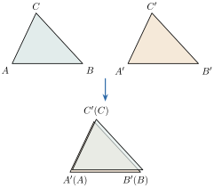
បើគេយកត្រីកោណ \(\displaystyle ABC\) ដាក់ឱ្យត្រួតលើត្រីកោណ \(\displaystyle A'B'C'\) នោះយើងសង្កេតឃើញថាត្រីកោណទាំងពីរត្រួតស៊ីគ្នា មានន័យថាធាតុនីមួយៗនៃត្រីកោណ \(\displaystyle ABC\) ត្រួតស៊ីគ្នានឹងធាតុត្រូវគ្នានៃត្រីកោណ \(\displaystyle A'B'C'\)។ គេថាត្រីកោណ \(\displaystyle ABC\) និងត្រីកោណ \(\displaystyle A'B'C'\) ជាត្រីកោណប៉ុនគ្នា។
គេកំណត់សរសេរ \(\displaystyle \Delta ABC \cong \Delta A'B'C'\)។
ដោយត្រីកោណទាំងពីរនេះត្រួតស៊ីគ្នា នោះ គេបានធាតុត្រូវគ្នាប៉ុនគ្នាដូចខាងក្រោម ៖
\(\displaystyle \Delta ABC \cong \Delta A'B'C'\)
| មុំត្រូវគ្នា | ជ្រុងត្រូវគ្នា |
| \(\displaystyle \angle A = \angle A'\) | \(\displaystyle AB = A'B'\) |
| \(\displaystyle \angle B = \angle B'\) | \(\displaystyle AC = A'C'\) |
| \(\displaystyle \angle C = \angle C'\) | \(\displaystyle BC = B'C'\) |
ត្រីកោណពីរជាត្រីកោណប៉ុនគ្នា លុះត្រាតែធាតុត្រូវគ្នាវាប៉ុនគ្នា។
បើត្រីកោណពីរជាត្រីកោណប៉ុនគ្នា តើយើងអាចសន្និដ្ឋានបានដូចម្ដេច? ចូរឱ្យឧទាហរណ៍ពន្យល់ចម្លើយរបស់អ្នក។
ធាតុត្រូវគ្នាប្រាំមួយគូជាធាតុប៉ុនគ្នា
បើ \(\displaystyle \Delta ABC \cong \Delta A'B'C'\) នោះ
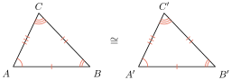
ពន្យល់ថា ហេតុអ្វីបានជាត្រីកោណពីរខាងស្តាំមិនប៉ុនគ្នា។
មើលចម្លើយ
តាមមុំមិនស្មើគ្នា។
1.2. លក្ខខណ្ឌនៃត្រីកោណប៉ុនគ្នា
ត្រីកោណពីរប៉ុនគ្នា កាលណាមានធាតុត្រូវគ្នាបីមួយគូៗជាធាតុប៉ុនគ្នា។ ក្នុងករណីនេះសិក្សាតែធាតុប៉ុនគ្នារវាងមុំនិងជ្រុងតាមលក្ខខណ្ឌដូចខាងក្រោម ៖
1.2.1. ជ្រុងមួយប៉ុនគ្នានិងមុំជាប់ពីរស្មើគ្នា (ម.ជ្រ.ម)
សង់ \(\displaystyle \Delta ABC\) និង \(\displaystyle \Delta A'B'C'\) ដែលមុំ \(\displaystyle \angle A = \angle A' = 60^\circ\), \(\displaystyle \angle B = \angle B' = 40^\circ\) និងជ្រុង \(\displaystyle AB = A'B' = 6\text{ cm}\)។ ចូរប្រៀបធៀបត្រីកោណទាំងពីរនេះ។
សង់ \(\displaystyle \Delta ABC\) លើក្រដាសកាតុង
- គូសអង្កត់ \(\displaystyle AB\) មួយដែលមាន \(\displaystyle AB = 6\text{ cm}\) នៅលើបន្ទាត់ \(\displaystyle l\)
- ប្រើរ៉ាប់ទ័រត្រង់ចំណុច \(\displaystyle A\) និង \(\displaystyle B\) គូសមុំ \(\displaystyle 60^\circ\) និង \(\displaystyle 40^\circ\) រៀងគ្នា
- ភ្ជាប់ជ្រុងនៃមុំ \(\displaystyle A\) និង \(\displaystyle B\) ជួបគ្នាត្រង់ \(\displaystyle C\) គេបានត្រីកោណ \(\displaystyle ABC\) ដែលត្រូវសង់។
សង់ \(\displaystyle \Delta A'B'C'\) តាមរបៀបដូចគ្នានឹង \(\displaystyle \Delta ABC\)។
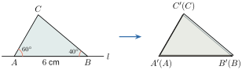
• ប្រៀបធៀប \(\displaystyle \Delta ABC\) និង \(\displaystyle \Delta A'B'C'\)
យក \(\displaystyle \Delta ABC\) ទៅដាក់ត្រួតលើ \(\displaystyle \Delta A'B'C'\) ដោយឱ្យជ្រុង \(\displaystyle AB\) ត្រួតស៊ីគ្នាលើ \(\displaystyle A'B'\) យើងសង្កេតឃើញថា ៖
- ជ្រុង \(\displaystyle AC\) ត្រួតស៊ីគ្នាលើជ្រុង \(\displaystyle A'C'\) ព្រោះ \(\displaystyle \angle A = \angle A' = 60^\circ\)
- ជ្រុង \(\displaystyle BC\) ត្រួតស៊ីគ្នាលើជ្រុង \(\displaystyle B'C'\) ព្រោះ \(\displaystyle \angle B = \angle B' = 40^\circ\)
ដោយធាតុត្រូវគ្នាប៉ុនគ្នា តាមនិយមន័យ យើងអាចសន្និដ្ឋានបានថា ត្រីកោណ \(\displaystyle ABC\) និង \(\displaystyle A'B'C'\) ជាត្រីកោណប៉ុនគ្នា។
ត្រីកោណពីរប៉ុនគ្នា កាលណាវាមានជ្រុងមួយប៉ុនគ្នានិងមុំជាប់ពីរស្មើគ្នា រៀងគ្នា។
បន្ទាប់ពីបានប្រៀបធៀបឱ្យត្រីកោណពីរប៉ុនគ្នាតាមលក្ខខណ្ឌ ម.ជ្រ.ម រួចហើយតាមនិយមន័យគេអាចទាញបានធាតុត្រូវគ្នាផ្សេងទៀតប៉ុនគ្នាហៅថា វិបាក។
| សម្មតិកម្ម | សន្និដ្ឋាន | វិបាក |
| \(\displaystyle \angle A = \angle A'\) \(\displaystyle AB = A'B'\) \(\displaystyle \angle B = \angle B'\) | \(\displaystyle \Delta ABC \cong \Delta A'B'C'\) (តាមលក្ខខណ្ឌ ម.ជ្រ.ម) | \(\displaystyle AC = A'C'\) \(\displaystyle BC = B'C'\) \(\displaystyle \angle C = \angle C'\) |
គេឱ្យអង្កត់ \(\displaystyle AB\) និង \(\displaystyle CD\) ប្រសព្វគ្នាត្រង់ចំណុច \(\displaystyle E\) ដែល \(\displaystyle EA = EB\) និងអង្កត់ \(\displaystyle AD\) ស្របនឹងអង្កត់ \(\displaystyle CB\)។
- ក. ប្រៀបធៀបត្រីកោណ \(\displaystyle AED\) និង \(\displaystyle BEC\)
- ខ. ទាញបញ្ជាក់ថា \(\displaystyle ED = EC\)
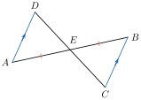
ក. ក្នុង \(\displaystyle \Delta AED\) និង \(\displaystyle \Delta BEC\) មាន ៖
- \(\displaystyle \angle AED = \angle BEC\) (មុំទល់កំពូល)
- \(\displaystyle EA = EB\) (សម្មតិកម្ម)
- \(\displaystyle \angle EAD = \angle EBC\) (មុំឆ្លាស់ក្នុងព្រោះ \(\displaystyle AD \parallel BC\))
ដូចនេះ \(\displaystyle \Delta AED \cong \Delta BEC\) (តាមលក្ខខណ្ឌ ម.ជ្រ.ម)
ខ. ទាញបញ្ជាក់ថា \(\displaystyle ED = EC\)
ដោយ \(\displaystyle \Delta AED \cong \Delta BEC\) នោះគេអាចទាញបានជ្រុងត្រូវគ្នាប៉ុនគ្នារៀងគ្នា ៖
ដូចនេះ \(\displaystyle ED = EC\)
រូបខាងស្តាំនេះមាន \(\displaystyle \angle ABC = \angle AED\) និង \(\displaystyle BC = DE\)។ បង្ហាញថា \(\displaystyle \Delta ABC \cong \Delta AED\) និង \(\displaystyle AD = AC\)។
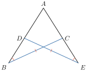
1.2.2. មុំមួយប៉ុនគ្នារវាងជ្រុងពីរប៉ុនរៀងគ្នា (ជ.ម.ជ)
សង់ត្រីកោណ \(\displaystyle ABC\) និង \(\displaystyle A'B'C'\) ដែលមុំ \(\displaystyle \angle A = \angle A' = 60^\circ\), \(\displaystyle AB = A'B' = 4\text{ cm}\) និងជ្រុង \(\displaystyle AC = A'C' = 6\text{ cm}\) រួចប្រៀបធៀបត្រីកោណទាំងពីរនេះ។
សង់ត្រីកោណ \(\displaystyle ABC\) លើក្រដាសកាតុង ៖
- ប្រើបន្ទាត់ត្រីកោណគូស \(\displaystyle AB\) មានប្រវែង \(\displaystyle 4\text{ cm}\)
- ប្រើរ៉ាប់ទ័រគូសមុំ \(\displaystyle \angle BAx = 60^\circ\)
- ប្រើបន្ទាត់ត្រីកោណនៅចំណុច \(\displaystyle A\) លើកន្លះបន្ទាត់ \(\displaystyle Ax\) ដែលជ្រុង \(\displaystyle AC\) មានប្រវែង \(\displaystyle 6\text{ cm}\)
- គេបានត្រីកោណ \(\displaystyle ABC\) ដែលត្រូវសង់។
សង់ត្រីកោណ \(\displaystyle A'B'C'\) តាមរបៀបដូចគ្នានឹងត្រីកោណ \(\displaystyle ABC\)។
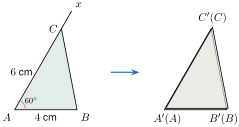
• ប្រៀបធៀប \(\displaystyle \Delta ABC\) និង \(\displaystyle \Delta A'B'C'\)
យក \(\displaystyle \Delta ABC\) ទៅដាក់ត្រួតលើ \(\displaystyle \Delta A'B'C'\) ដោយឱ្យមុំ \(\displaystyle \angle A\) ត្រួតស៊ីគ្នានឹង \(\displaystyle \angle A'\) យើងសង្កេតឃើញថា
- ជ្រុង \(\displaystyle AB\) ត្រួតស៊ីគ្នាលើជ្រុង \(\displaystyle A'B'\) ព្រោះ \(\displaystyle AB = A'B' = 4\text{ cm}\)
- ជ្រុង \(\displaystyle AC\) ត្រួតស៊ីគ្នាលើជ្រុង \(\displaystyle A'C'\) ព្រោះ \(\displaystyle AC = A'C' = 6\text{ cm}\)
ដោយ \(\displaystyle \Delta ABC\) និង \(\displaystyle \Delta A'B'C'\) មានធាតុត្រូវគ្នា ប៉ុនគ្នា តាមនិយមន័យត្រីកោណទាំងពីរនេះប៉ុនគ្នា។
ត្រីកោណពីរប៉ុនគ្នា កាលណាវាមានមុំមួយប៉ុនគ្នា អមដោយជ្រុងពីរស្មើគ្នារៀងគ្នា។
| សម្មតិកម្ម | សន្និដ្ឋាន | វិបាក |
| \(\displaystyle AB = A'B'\) \(\displaystyle \angle A = \angle A'\) \(\displaystyle AC = A'C'\) | \(\displaystyle \Delta ABC \cong \Delta A'B'C'\) (តាមលក្ខខណ្ឌ ជ.ម.ជ) | \(\displaystyle \angle B = \angle B'\) \(\displaystyle BC = B'C'\) \(\displaystyle \angle C = \angle C'\) |
គូស \(\displaystyle \angle XOY\) មួយនិងគូសកន្លះបន្ទាត់ \(\displaystyle OZ\) ជាកន្លះបន្ទាត់ពុះនៃមុំនេះ។ នៅលើកន្លះបន្ទាត់ \(\displaystyle OX\) និង \(\displaystyle OY\) គេដៅចំណុច \(\displaystyle A\) និង \(\displaystyle B\) រៀងគ្នាដែល \(\displaystyle OA = OB\)។ នៅលើកន្លះបន្ទាត់ \(\displaystyle OZ\) គេដៅចំណុច \(\displaystyle M\) មួយ។ ប្រៀបធៀបត្រីកោណ \(\displaystyle OMA\) និង \(\displaystyle OMB\) រួចទាញវិបាក។
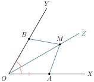
ប្រៀបធៀបត្រីកោណ \(\displaystyle OMA\) និង \(\displaystyle OMB\)
ក្នុង \(\displaystyle \Delta OMA\) និង \(\displaystyle \Delta OMB\) មាន ៖
- \(\displaystyle OA = OB\) (សម្មតិកម្ម)
- \(\displaystyle \angle AOM = \angle BOM\) (\(\displaystyle OM\) ជាកន្លះបន្ទាត់ពុះនៃ \(\displaystyle \angle XOY\))
- \(\displaystyle OM\) ជ្រុងរួមនៃត្រីកោណទាំងពីរ
ដូចនេះ \(\displaystyle \Delta OMA \cong \Delta OMB\) (តាមលក្ខខណ្ឌ ជ.ម.ជ)
វិបាក ៖ គេទាញបានធាតុត្រូវគ្នាផ្សេងទៀតប៉ុនគ្នា ៖
គូស \(\displaystyle \Delta AOB\) មួយ \(\displaystyle A'\) ជាចំណុចឆ្លុះនៃ \(\displaystyle A\) ធៀបនឹង \(\displaystyle O\) និង \(\displaystyle B'\) ជាចំណុចឆ្លុះនៃ \(\displaystyle B\) ធៀបនឹង \(\displaystyle O\)។ ស្រាយបំភ្លឺថា \(\displaystyle \Delta OAB \cong \Delta OA'B'\)។
មើលចម្លើយ
ករណី ជ.ម.ជ។
1.2.3. ជ្រុងទាំងបីប៉ុនគ្នារៀងគ្នា (ជ.ជ.ជ)
សង់ \(\displaystyle \Delta ABC\) និង \(\displaystyle \Delta A'B'C'\) ដែលជ្រុង \(\displaystyle AB = A'B' = 6\text{ cm}\), \(\displaystyle AC = A'C' = 5\text{ cm}\) និង \(\displaystyle BC = B'C' = 3\text{ cm}\) រួចប្រៀបធៀបត្រីកោណទាំងពីរនេះ។
សង់ត្រីកោណ \(\displaystyle ABC\) លើក្រដាសកាតុង ៖
- ជ្រើសរើសចំណុច \(\displaystyle A\) មួយ នៅលើបន្ទាត់ \(\displaystyle l\)
- សង់ជ្រុង \(\displaystyle AB\) លើបន្ទាត់ \(\displaystyle l\) ដែល \(\displaystyle AB = 6\text{ cm}\)
- យក \(\displaystyle A\) ជាផ្ចិតគូសធ្នូរង្វង់មួយមានកាំស្មើនឹង \(\displaystyle 5\text{ cm}\)
- យក \(\displaystyle B\) ជាផ្ចិតគូសធ្នូរង្វង់មួយមានកាំស្មើនឹង \(\displaystyle 3\text{ cm}\)
- តាង \(\displaystyle C\) ជាចំណុចប្រសព្វនៃធ្នូទាំងពីរ
- គូសអង្កត់ \(\displaystyle AC\) និង \(\displaystyle BC\) គេបានត្រីកោណ \(\displaystyle ABC\) ដែលត្រូវសង់។
សង់ត្រីកោណ \(\displaystyle A'B'C'\) តាមរបៀបដូចគ្នានឹងត្រីកោណ \(\displaystyle ABC\)។
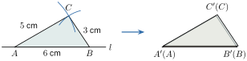
• ប្រៀបធៀប \(\displaystyle \Delta ABC\) និង \(\displaystyle \Delta A'B'C'\)
យើងយក \(\displaystyle \Delta ABC\) ទៅដាក់លើ \(\displaystyle \Delta A'B'C'\) ដោយឱ្យជ្រុង \(\displaystyle AB\) ត្រួតស៊ីគ្នាលើជ្រុង \(\displaystyle A'B'\) យើងឃើញថា កំពូល \(\displaystyle C\) និង \(\displaystyle C'\) ត្រួតស៊ីគ្នានៅលើចំហៀងតែមួយនៃជ្រុង \(\displaystyle AC\) ហើយប្រវែងជ្រុងទាំងបីកំណត់បានទីតាំងនៃត្រីកោណតែមួយគត់ មានន័យថាត្រីកោណ \(\displaystyle ABC\) និង \(\displaystyle A'B'C'\) ត្រួតស៊ីគ្នា ព្រោះជ្រុងត្រូវគ្នាទាំងបីគូមានប្រវែងស្មើគ្នា។ ដូចនេះត្រីកោណទាំងពីរនេះប៉ុនគ្នា។
ត្រីកោណពីរប៉ុនគ្នា កាលណាវាមានជ្រុងទាំងបីប៉ុនគ្នារៀងគ្នា។
| សម្មតិកម្ម | សន្និដ្ឋាន | វិបាក |
| \(\displaystyle AB = A'B'\) \(\displaystyle AC = A'C'\) \(\displaystyle BC = B'C'\) | \(\displaystyle \Delta ABC \cong \Delta A'B'C'\) (តាមលក្ខខណ្ឌ ជ.ជ.ជ) | \(\displaystyle \angle A = \angle A'\) \(\displaystyle \angle B = \angle B'\) \(\displaystyle \angle C = \angle C'\) |
រូបខាងស្តាំនេះគេឱ្យ \(\displaystyle EF = HK\), \(\displaystyle FJ = GK\) និង \(\displaystyle EG = HJ\)។ បង្ហាញថា \(\displaystyle \Delta EFG \cong \Delta HKJ\)។

គេមាន
តាម \(\displaystyle (1)\) និង \(\displaystyle (2)\) នាំឱ្យ \(\displaystyle FG = JK\)
ក្នុង \(\displaystyle \Delta EFG\) និង \(\displaystyle \Delta HKJ\) មាន ៖
- \(\displaystyle EF = HK\) (សម្មតិកម្ម)
- \(\displaystyle EG = HJ\) (សម្មតិកម្ម)
- \(\displaystyle FG = JK\) (សម្រាយខាងលើ)
ដូចនេះ \(\displaystyle \Delta EFG \cong \Delta HKJ\) (តាមលក្ខខណ្ឌ ជ.ជ.ជ)
រូបខាងស្តាំនេះគេឱ្យ \(\displaystyle RZ = VW\), \(\displaystyle TZ = SW\) និង \(\displaystyle RS = TV\)។ ប្រៀបធៀប \(\displaystyle \Delta RZT\) និង \(\displaystyle \Delta VWS\)។
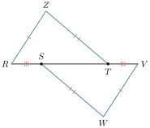
មើលចម្លើយ
ករណី ជ.ជ.ជ។
1.3. លក្ខខណ្ឌចំពោះត្រីកោណកែងប៉ុនគ្នា
ត្រីកោណកែងពីរប៉ុនគ្នា មានពីរលក្ខខណ្ឌដូចខាងក្រោម ៖
1.3.1. អ៊ីប៉ូតែនុសប៉ុនគ្នានិងមុំស្រួចមួយប៉ុនគ្នា (អ.ម)
ក្នុង \(\displaystyle \Delta ABC\) និង \(\displaystyle \Delta A'B'C'\) មាន \(\displaystyle \angle C = \angle C'\), \(\displaystyle \angle A = \angle A' = 90^\circ\), \(\displaystyle BC = B'C'\)។ បង្ហាញថា \(\displaystyle \Delta ABC \cong \Delta A'B'C'\)។
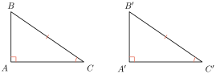
ក្នុងត្រីកោណកែង \(\displaystyle ABC\) គេបាន ៖
ក្នុងត្រីកោណកែង \(\displaystyle A'B'C'\) គេបាន ៖
ដោយ \(\displaystyle \angle C = \angle C'\) (សម្មតិកម្ម) នោះ \(\displaystyle \angle B = \angle B'\)
ក្នុង \(\displaystyle \Delta ABC\) និង \(\displaystyle \Delta A'B'C'\) មាន ៖
តាម \(\displaystyle (1)\), \(\displaystyle (2)\) និង \(\displaystyle (3)\) ដូចនេះ \(\displaystyle \Delta ABC \cong \Delta A'B'C'\) (តាមលក្ខខណ្ឌ ម.ជ្រ.ម)។
ត្រីកោណកែងពីរប៉ុនគ្នា កាលណាវាមានអ៊ីប៉ូតែនុសប៉ុនគ្នានិងមុំស្រួចមួយប៉ុនគ្នា។
គេឱ្យ \(\displaystyle M\) ជាចំណុចមួយស្ថិតនៅលើកន្លះបន្ទាត់ពុះនៃ \(\displaystyle \angle XOY\)។ តាមចំណុច \(\displaystyle M\) គេគូសបន្ទាត់កែងនឹង \(\displaystyle OX\) ត្រង់ \(\displaystyle A\) និង \(\displaystyle OY\) ត្រង់ \(\displaystyle B\)។ បង្ហាញថា \(\displaystyle MA = MB\)។
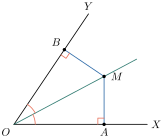
ត្រីកោណកែង \(\displaystyle OMA\) និងត្រីកោណកែង \(\displaystyle OMB\) មាន ៖
- \(\displaystyle OM\) ជាអ៊ីប៉ូតែនុសរួម
- \(\displaystyle \angle MOA = \angle MOB\) (ព្រោះ \(\displaystyle OM\) ជាកន្លះបន្ទាត់ពុះនៃ \(\displaystyle \angle AOB\))
ដូចនេះ \(\displaystyle \Delta OMA \cong \Delta OMB\) (តាមលក្ខខណ្ឌ អ.ម)
វិបាក ៖ \(\displaystyle MA = MB\)
គ្រប់ចំណុចស្ថិតនៅលើកន្លះបន្ទាត់ពុះនៃមុំមួយ ត្រូវស្ថិតនៅស្មើចម្ងាយពីជ្រុងទាំងពីរនៃមុំនោះ។
ច្រាសមកវិញគ្រប់ចំណុចដែលមានចម្ងាយស្មើទៅនឹងជ្រុងទាំងពីរនៃមុំមួយ ត្រូវស្ថិតនៅលើកន្លះបន្ទាត់ពុះនៃមុំនោះ។
\(\displaystyle ABC\) ជាត្រីកោណសមបាតកំពូល \(\displaystyle A\)។ កម្ពស់គូសចេញពីកំពូល \(\displaystyle B\) និង \(\displaystyle C\) កាត់ជ្រុង \(\displaystyle AC\) និង \(\displaystyle AB\) ត្រង់ \(\displaystyle D\) និង \(\displaystyle E\) រៀងគ្នា។ បង្ហាញថា \(\displaystyle BD = CE\) និង \(\displaystyle BE = CD\)។
មើលចម្លើយ
ករណី អ.ម. ឬ ជ.ម.ជ។
1.3.2. អ៊ីប៉ូតែនុសប៉ុនគ្នានិងជ្រុងកែងមួយប៉ុនគ្នា (អ.ជ្រ)
ក្នុង \(\displaystyle \Delta ABC\) និង \(\displaystyle \Delta A'B'C'\) មាន \(\displaystyle \angle A = \angle A' = 90^\circ\), \(\displaystyle AB = A'B'\), \(\displaystyle BC = B'C'\)។ តើត្រីកោណកែងទាំងពីរនេះប៉ុនគ្នាឬទេ?
ដោយ \(\displaystyle AB = A'B'\) យើងអាចត្រួតស៊ីគ្នាយ៉ាងណាឱ្យជ្រុង \(\displaystyle A'C'\) ត្រួតលើជ្រុង \(\displaystyle AC\) ដែលជាជ្រុងនៃ \(\displaystyle \Delta A'BC\) និង \(\displaystyle \Delta ABC\)
ដោយ \(\displaystyle \angle A = \angle A' = 90^\circ\) យើងដឹងថា \(\displaystyle \angle BAB' = \angle BAC + \angle CAB' = 90^\circ + 90^\circ = 180^\circ\) ជាមុំរាបជាប់បន្ថែម។
ដូចនេះអង្កត់ \(\displaystyle BA\) និងអង្កត់ \(\displaystyle AB'\) ភ្ជាប់គ្នាបានជាអង្កត់ \(\displaystyle BB'\) មួយ។
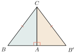
ក្នុង \(\displaystyle \Delta BCB'\) មាន \(\displaystyle CB = CB'\) នោះ \(\displaystyle \Delta BCB'\) ជាត្រីកោណសមបាតត្រង់កំពូល \(\displaystyle C\)។ ដូចនេះ \(\displaystyle \angle B = \angle B'\)។
ក្នុងត្រីកោណកែង \(\displaystyle BAC\) និង \(\displaystyle BAC'\) មាន ៖
- \(\displaystyle CB = CB'\) អ៊ីប៉ូតែនុសប៉ុនគ្នា (សម្មតិកម្ម)
- \(\displaystyle \angle B = \angle B'\) មុំប៉ុនគ្នា
ដូចនេះ \(\displaystyle \Delta ABC \cong \Delta A'B'C'\) (តាមលក្ខខណ្ឌ អ.ម)
ត្រីកោណកែងពីរប៉ុនគ្នា កាលណាវាមានអ៊ីប៉ូតែនុសប៉ុនគ្នានិងជ្រុងមួយនៃមុំកែងប៉ុនគ្នា។
កន្លះបន្ទាត់ពុះនៃ \(\displaystyle \angle B\) និង \(\displaystyle \angle C\) ក្នុងត្រីកោណ \(\displaystyle ABC\) ប្រសព្វគ្នាត្រង់ \(\displaystyle I\)។ តាម \(\displaystyle I\) គេគូសបន្ទាត់កែងទៅនឹងជ្រុង \(\displaystyle AB\), \(\displaystyle BC\) និង \(\displaystyle AC\) ត្រង់ \(\displaystyle D, E\) និង \(\displaystyle F\) រៀងគ្នា។
- ក. បង្ហាញថា \(\displaystyle ID = IE = IF\)
- ខ. បង្ហាញថា កន្លះបន្ទាត់ \(\displaystyle AI\) ជាកន្លះបន្ទាត់ពុះនៃ \(\displaystyle \angle BAC\)

ក. ក្នុងត្រីកោណកែង \(\displaystyle BEI\) និង \(\displaystyle BDI\) មាន ៖
- \(\displaystyle BI\) ជាអ៊ីប៉ូតែនុសរួម
- \(\displaystyle \angle IBE = \angle IBD\) (\(\displaystyle IB\) ជាកន្លះបន្ទាត់ពុះនៃ \(\displaystyle \angle ABC\))
ដូចនេះ \(\displaystyle \Delta BEI \cong \Delta BDI\) (តាមលក្ខខណ្ឌ អ.ម)
វិបាក ៖ \(\displaystyle ID = IE \quad (1)\)
ក្នុងត្រីកោណកែង \(\displaystyle CEI\) និង \(\displaystyle CFI\) មាន ៖
- \(\displaystyle CI\) អ៊ីប៉ូតែនុសរួម
- \(\displaystyle \angle ICE = \angle ICF\) (\(\displaystyle IC\) ជាកន្លះបន្ទាត់ពុះនៃ \(\displaystyle \angle BCA\))
ដូចនេះ \(\displaystyle \Delta CEI \cong \Delta CFI\) (តាមលក្ខខណ្ឌ អ.ម)
វិបាក ៖ \(\displaystyle IE = IF \quad (2)\)
តាម \(\displaystyle (1)\) និង \(\displaystyle (2)\) គេទាញបាន ៖ \(\displaystyle ID = IE = IF\)
ខ. ក្នុងត្រីកោណកែង \(\displaystyle IDA\) និង \(\displaystyle IFA\) មាន ៖
- \(\displaystyle AI\) ជាអ៊ីប៉ូតែនុសរួម
- \(\displaystyle ID = IF\) (សម្រាយខាងលើ)
ដូចនេះ \(\displaystyle \Delta IDA \cong \Delta IFA\) (តាមលក្ខខណ្ឌ អ.ជ្រ)
វិបាក ៖ \(\displaystyle \angle IAD = \angle IAF\) ឬ \(\displaystyle \angle IAB = \angle IAC\)
ដូចនេះគេអាចសន្និដ្ឋានបានថា \(\displaystyle AI\) ជាកន្លះបន្ទាត់ពុះនៃមុំ \(\displaystyle \angle BAC\)
តាមសម្រាយខាងលើ \(\displaystyle ID = IE = IF\) នោះចំណុច \(\displaystyle I\) ស្ថិតនៅស្មើចម្ងាយពីជ្រុងទាំងបីនៃត្រីកោណ។
កន្លះបន្ទាត់ពុះមុំទាំងបីនៃត្រីកោណមួយប្រសព្វគ្នាត្រង់ចំណុចតែមួយដែលស្ថិតនៅស្មើចម្ងាយពីជ្រុងទាំងបីនៃត្រីកោណនោះ។
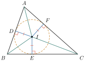
\(\displaystyle ABC\) ជាត្រីកោណមួយនិង \(\displaystyle M\) ជាចំណុចកណ្ដាលនៃជ្រុង \(\displaystyle BC\)។ តាម \(\displaystyle M\) គេគូសបន្ទាត់កែងទៅនឹងជ្រុង \(\displaystyle AB\) និង \(\displaystyle AC\) ត្រង់ \(\displaystyle D\) និង \(\displaystyle E\) រៀងគ្នា។ បង្ហាញថា បើ \(\displaystyle MD = ME\) នោះ \(\displaystyle \angle B = \angle C\)។

មើលចម្លើយ
តាម \(\displaystyle \Delta BDM \cong \Delta MEC\)។
2. មេដ្យាទ័រនៃអង្កត់និងត្រីកោណសមបាត
2.1. លក្ខណៈមេដ្យាទ័រនៃអង្កត់
ដៅចំណុចកណ្ដាលនៃអង្កត់ \(\displaystyle BC\)។ បន្ទាត់ \(\displaystyle \Delta\) មួយកែងនឹងអង្កត់ \(\displaystyle BC\) ត្រង់ \(\displaystyle I\) គឺជាមេដ្យាទ័រនៃអង្កត់ \(\displaystyle BC\)។
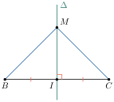
ចំណុច \(\displaystyle M\) មួយស្ថិតនៅលើបន្ទាត់ \(\displaystyle \Delta\) មេដ្យាទ័រនៃអង្កត់ \(\displaystyle BC\)។ ក្នុងត្រីកោណកែង \(\displaystyle MIB\) និង \(\displaystyle MIC\) មាន
- \(\displaystyle IM\) ជាជ្រុងរួម
- \(\displaystyle \angle MIB = \angle MIC = 90^\circ\) (ព្រោះ \(\displaystyle \Delta \perp BC\) ត្រង់ \(\displaystyle I\))
- \(\displaystyle IB = IC\) (\(\displaystyle I\) ជាចំណុចកណ្ដាលនៃអង្កត់ \(\displaystyle BC\))
ដូចនេះ \(\displaystyle \Delta MIB \cong \Delta MIC\) (តាមលក្ខខណ្ឌ ជ.ម.ជ)
វិបាក ៖ \(\displaystyle MB = MC\), \(\displaystyle \angle IMB = \angle IMC\) និង \(\displaystyle \angle IBM = \angle ICM\)
- គ្រប់ចំណុចស្ថិតនៅលើមេដ្យាទ័រនៃអង្កត់មួយត្រូវស្ថិតនៅស្មើចម្ងាយពីចុងទាំងពីរនៃអង្កត់នោះ។
- គ្រប់ចំណុចដែលស្ថិតនៅស្មើចម្ងាយពីចុងទាំងពីរនៃអង្កត់មួយ ចំណុចទាំងនោះស្ថិតនៅលើមេដ្យាទ័រនៃអង្កត់នោះ។
2.2. លក្ខណៈត្រីកោណសមបាត
តាមសម្រាយខាងលើ \(\displaystyle MB = MC\) នោះ \(\displaystyle \Delta BMC\) ជាត្រីកោណសមបាតកំពូល \(\displaystyle M\)
ម្យ៉ាងទៀត \(\displaystyle \angle IMB = \angle IMC\) នោះ \(\displaystyle MI\) ជាកន្លះបន្ទាត់ពុះនៃ \(\displaystyle \angle M\)
\(\displaystyle IB = IC\) នោះ \(\displaystyle MI\) ជាមេដ្យានរបស់ជ្រុង \(\displaystyle BC\) នៃ \(\displaystyle \Delta BMC\)
\(\displaystyle MI \perp BC\) ត្រង់ចំណុចកណ្ដាល \(\displaystyle I\) នោះ \(\displaystyle MI\) ជាកម្ពស់និងជាមេដ្យាទ័ររបស់ជ្រុង \(\displaystyle BC\) នៃ \(\displaystyle \Delta BMC\)។ គេអាចទាញបានលក្ខណៈដូចខាងក្រោម ៖
ក្នុងត្រីកោណសមបាតមាន ៖
- មុំបាតទាំងពីរជាមុំប៉ុនគ្នា
- មេដ្យាទ័រ មេដ្យាន កម្ពស់គូសចេញពីកំពូល និងកន្លះបន្ទាត់ពុះនៃមុំកំពូលនោះស្ថិតនៅលើបន្ទាត់តែមួយ។
មេដ្យាទ័ររបស់ជ្រុង \(\displaystyle AB\) និង \(\displaystyle BC\) នៃត្រីកោណ \(\displaystyle ABC\) ប្រសព្វគ្នាត្រង់ \(\displaystyle O\)។
- ក. បង្ហាញថា \(\displaystyle OA = OB = OC\)
- ខ. បើ \(\displaystyle N\) ជាចំណុចកណ្ដាលនៃ \(\displaystyle AC\) បង្ហាញថា \(\displaystyle ON \perp AC\)

ក. មេដ្យាទ័ររបស់ជ្រុង \(\displaystyle AB\) និង \(\displaystyle BC\) កាត់ \(\displaystyle AB\) និង \(\displaystyle BC\) ត្រង់ \(\displaystyle L\) និង \(\displaystyle M\) រៀងគ្នា។ ហើយ \(\displaystyle O\) ជាប្រសព្វមេដ្យាទ័ររបស់ជ្រុង \(\displaystyle AB\) និង \(\displaystyle BC\)
ដូចនេះ \(\displaystyle OA = OB = OC\)
ខ. គេមាន \(\displaystyle OA = OC\) (ស្រាយខាងលើ) នោះ \(\displaystyle \Delta AOC\) ជាត្រីកោណសមបាតកំពូល \(\displaystyle O\)
\(\displaystyle N\) ជាចំណុចកណ្ដាលនៃជ្រុង \(\displaystyle AC\) នោះ \(\displaystyle ON\) ជាមេដ្យាននៃជ្រុង \(\displaystyle AC\) របស់ \(\displaystyle \Delta AOC\) តាមលក្ខណៈត្រីកោណសមបាត គេបានបន្ទាត់ \(\displaystyle ON\) ជាមេដ្យាទ័រនៃជ្រុង \(\displaystyle AC\)។ ដូចនេះ \(\displaystyle ON \perp AC\)។
មេដ្យាទ័រនៃជ្រុងទាំងបីរបស់ \(\displaystyle \Delta ABC\) ប្រសព្វគ្នាត្រង់ចំណុច \(\displaystyle O\)។
\(\displaystyle OA = OB = OC\) នោះ \(\displaystyle O\) មានចម្ងាយស្មើទៅនឹងកំពូលទាំងបីនៃ \(\displaystyle \Delta ABC\)។
គេអាចកំណត់បានទ្រឹស្ដីបទដូចខាងក្រោម ៖
មេដ្យាទ័រជ្រុងទាំងបីនៃត្រីកោណមួយប្រសព្វគ្នាត្រង់ចំណុចតែមួយដែលស្ថិតនៅស្មើចម្ងាយពីកំពូលទាំងបីនៃត្រីកោណនោះ។
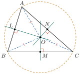
3. វិសមភាពក្នុងត្រីកោណ
3.1. វិសមភាពចំពោះជ្រុងនិងមុំទល់នៃត្រីកោណមួយ
ក្នុងត្រីកោណ \(\displaystyle ABC\) ជ្រុង \(\displaystyle AC\) ឈមនឹង \(\displaystyle \angle B\) ជ្រុង \(\displaystyle AB\) ឈមនឹង \(\displaystyle \angle C\) ដែល \(\displaystyle AC > AB\)។ បង្ហាញថា \(\displaystyle \angle B > \angle C\)។
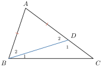
នៅលើជ្រុង \(\displaystyle AC\) ដៅចំណុច \(\displaystyle D\) មួយដែល \(\displaystyle AD = AB\)
គេបាន \(\displaystyle AB = AD\) នោះ \(\displaystyle \Delta ABD\) ជាត្រីកោណសមបាតកំពូល \(\displaystyle A\) នាំឱ្យ \(\displaystyle \angle B_2 = \angle D_2\)។ ប៉ុន្តែ \(\displaystyle \angle D_2\) ជាមុំក្រៅនៃ \(\displaystyle \Delta BCD\) គេបាន \(\displaystyle \angle D_2 = \angle B_1 + \angle C\) នាំឱ្យ \(\displaystyle \angle D_2 > \angle C\)
ដោយ \(\displaystyle \angle B_2 = \angle D_2\) នោះ \(\displaystyle \angle B_2 > \angle C \quad (1)\)
ម្យ៉ាងទៀត \(\displaystyle \angle B = \angle B_1 + \angle B_2\) នោះ \(\displaystyle \angle B > \angle B_2 \quad (2)\)
គេទាញបានទ្រឹស្ដីបទដូចខាងក្រោម ៖
ក្នុងត្រីកោណមួយ ៖
- បើជ្រុងពីរមិនស្មើគ្នា មុំដែលឈមនឹងជ្រុងវែងជាងទាំងពីរនេះក៏មិនស្មើគ្នាដែរ ហើយមុំដែលឈមនឹងជ្រុងវែងជាង ជាមុំធំជាង។
- ច្រាសមកវិញ បើមុំពីរមិនស្មើគ្នាជ្រុងដែលឈមនឹងមុំធំជាងទាំងពីរនេះក៏មិនស្មើគ្នាដែរ ហើយជ្រុងដែលឈមនឹងមុំធំជាង ជាជ្រុងវែងជាង។
ក្នុង \(\displaystyle \Delta ABC\) មាន \(\displaystyle \angle A = 6x + 4^\circ\), \(\displaystyle \angle B = 7x + 12^\circ\) និង \(\displaystyle \angle C = 6x - 7^\circ\)។ រៀបជ្រុងនៃ \(\displaystyle \Delta ABC\) តាមលំដាប់ពីធំទៅតូច។
ក្នុង \(\displaystyle \Delta ABC\) គេបាន ៖
ដោយ \(\displaystyle x = 9^\circ\) គេបាន ៖
ដោយ \(\displaystyle \angle B > \angle A > \angle C\) គេបាន \(\displaystyle AC > BC > AB\)
ដូចនេះជ្រុងរៀបតាមលំដាប់ពីធំទៅតូចគឺ \(\displaystyle AC > BC > AB\)។
រូបខាងស្តាំនេះគេឱ្យ \(\displaystyle AB = AC = BD\) និង \(\displaystyle \angle ABC < \angle BAC\)។ បង្ហាញថា \(\displaystyle BD < BC\)។
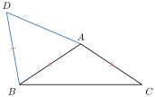
3.2. វិសមភាពត្រីកោណ
\(\displaystyle ABC\) ជាត្រីកោណមួយ។ គេបន្តជ្រុង \(\displaystyle BC\) ឱ្យបាន \(\displaystyle CM\) ដែល \(\displaystyle CM = CA\)។ ប្រៀបធៀប \(\displaystyle AB\) និង \(\displaystyle BC + AC\)។
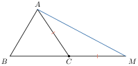
ក្នុង \(\displaystyle \Delta ABM\) គេបាន ៖
ក្នុង \(\displaystyle \Delta ACM\) មាន \(\displaystyle CM = CA\) ដូចនេះ \(\displaystyle \Delta ACM\) ជាត្រីកោណសមបាតកំពូល \(\displaystyle C\)
គេទាញបាន \(\displaystyle \angle CAM = \angle CMA\)
\(\displaystyle \angle BAM > \angle CMA\) ឬ \(\displaystyle \angle BAM > \angle BMA\)
ក្នុង \(\displaystyle \Delta BAM\) មាន \(\displaystyle \angle BAM > \angle BMA\) នាំឱ្យ \(\displaystyle BM > AB\)
ដោយ \(\displaystyle BM = BC + CM = BC + AC\) (ព្រោះ \(\displaystyle AC = CM\))
ដូចនេះ \(\displaystyle AC + BC > AB\) ។
ផលបូកប្រវែងពីរនៃត្រីកោណមួយធំជាងជ្រុងមួយទៀត ។
4. ការប្រៀបធៀបអង្កត់
4.1. ប្រៀបធៀបអង្កត់កែងនិងអង្កត់ទ្រេត
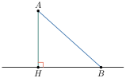
\(\displaystyle \Delta AHB\) ជាត្រីកោណកែងត្រង់ \(\displaystyle H\) គេបាន \(\displaystyle \angle H > \angle A\) នាំឱ្យ \(\displaystyle AB > BH\), \(\displaystyle \angle H > \angle B\) នាំឱ្យ \(\displaystyle AB > AH\)។
អង្កត់កែងមានប្រវែងខ្លីជាងអង្កត់ទ្រេត ។
4.3. ការប្រៀបធៀបអង្កត់ទ្រេតនិងអង្កត់ទ្រេត
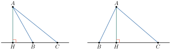
- រវាងអង្កត់ទ្រេតពីរ អង្កត់ទ្រេតដែលមានគម្លាតធំជាអង្កត់ទ្រេតធំ ។
- រវាងអង្កត់ទ្រេតពីរ អង្កត់ទ្រេតធំជាអង្កត់ទ្រេតដែលមានគម្លាតធំ ។
ខ្លឹមសារ៖ សៀវភៅពុម្ពគណិតវិទ្យាថ្នាក់ទី៨ របស់ក្រសួងអប់រំ យុវជន និងកីឡា · វាយអត្ថបទ គូររូបភាពឡើងវិញ និងរៀបចំលើអនឡាញដោយលោកគ្រូ សាន សុខលី សម្រាប់ការសិក្សាដោយឥតគិតថ្លៃ និងមិនរកប្រាក់ចំណេញ។ មិនមែនជាការបោះពុម្ពផ្លូវការរបស់ក្រសួងទេ។